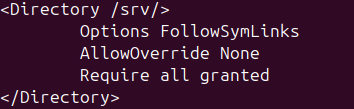

Pour installer Apache2 sur notre machine vituelle, nous avons utiliser l'insatallation par paquets grâce à la commande "sudo apt install Apache2"
Pour nous assurer que l'installation s'était correctement déroulée, nous avons vérifié que la page afficher dans un navigateur en recherchant l'adresse IP de la machine virtuelle soit bien la page afficher par défaut par Apache2 sur Ubuntu :
Nous avons ensuite créé un répertoir rapport_S1.03.fr dans lequel qui servira a stocker notre site web et y avons créé un fichier index.html :
Ensuite nous avons créé un lien vers ce répertoire dans le répertoire srv :
Nous avons après modifié la configuration d'Apache2 afin qu'il puisse avoir accès au répertoire srv. Pour cela nous avons modifié le fichier /etc/apache2/apache2.conf :
Puis nous avons retiré l'option Indexes pour empêcher l'utilisateur d'avoir un accès directe à l'arborescence du site :
Après nous avons modifié le fichier /etc/apache2/sites-available/000-default.conf afin qu'Apache2 lance le site lorsque l'on recherche l'adresse IP de la machine virtuelle :
Enfin nous avons modifié les droits du répertoire domicile en utilisant la commande "chmod o+x ines" afin qu'Apache2 puisse avoir accès au site :
Et après avoir recharger Apache2 grâce à la commande "sudo systemctl reload apache2.service" pour que les modifications que nous avons apporter à la configuration du serveur soit prises en compte, nous pouvons constater que nous accédons bien au fichier index.html créé précédement en recherchant l'IP de la machine virtuelle dans un navigateur :
Pour pouvoir avoir accès au site depuis la machine virtuelle, il faut d'abord le déployer. Heureusement, webstorm possède un outil pour le faire.
Tout d'abord, il faut aller dans Tools -> Deployment -> Configuration et ajouter une configuration en cliquant sur le + en haut à gauche de la fenêtre et sélectionnant SFTP :
Ensuite il est nécessaire de créé une configuration SSH pour que webstorm puisse avoir accès à la machine virtuelle. Pour ce faire nous avons entrer l'IP de notre machine, le nom de du propriétaire du premier répertoire que nous avons créé lors la mise en place d'Apache2 ainsi que son mot de passe. Une fois ceci fait il est possible de tester la connexion entre webstorm et la machine virtuelle :
Ensuite il faut indiquer le chemin vers le répertoire dans l'onglet "Root path"
Et le chemin vers la racine dans "Deployment path"
Enfin nous nous sommes assuré que l'option "Automatic Upload" était activée dans Tools -> Deployment -> Configuration et nous déployer le site en cliquant sur "Upload to S1.03"